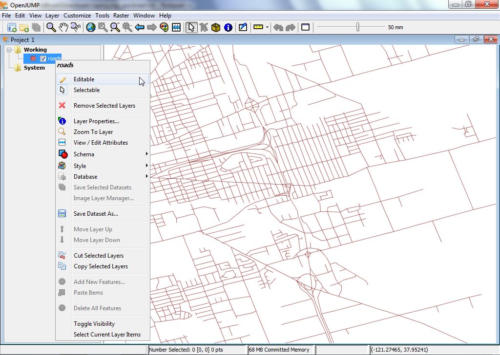
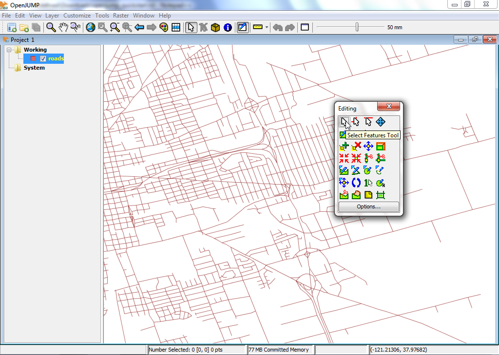
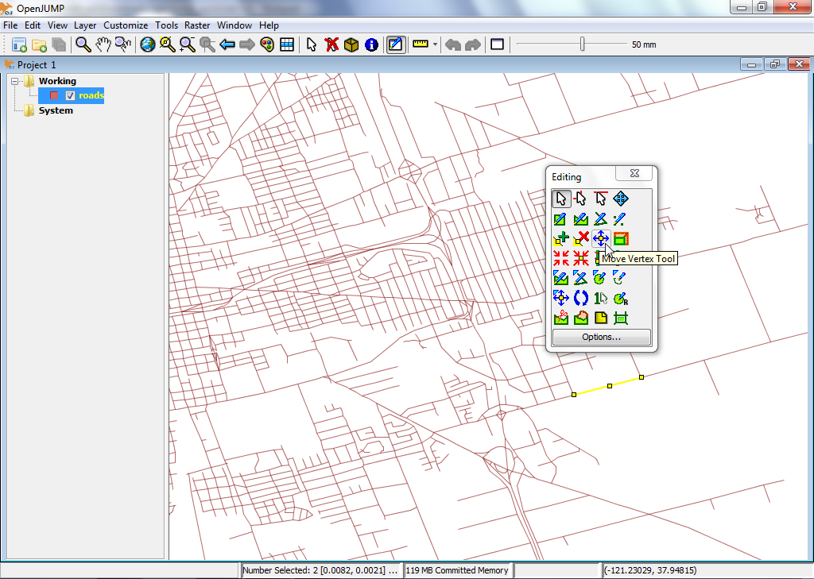
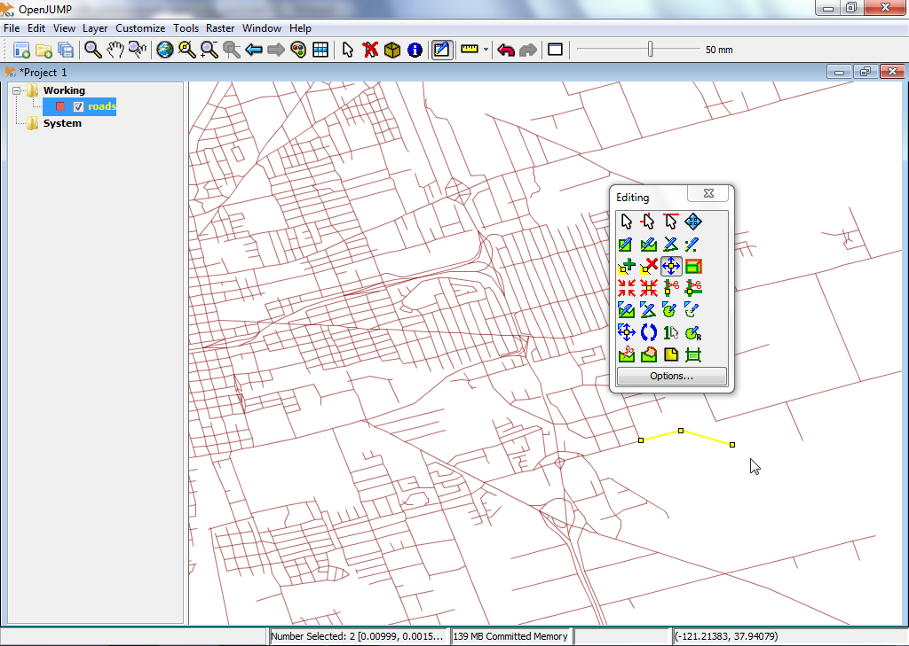

OpenJUMP GIS Quickstart¶
OpenJUMP is a desktop GIS program that allows for easy viewing and editing of vector GIS data. The PLUS edition also support analysis of raster data.
Start OpenJUMP¶
From the desktop, choose .
The OpenJUMP user interface has four (4) basic components.
[1] The first is a top-level menu bar for accessing most functionality.
[2] The second is a main toolbar that sits just below the menu bar. The buttons give access to the most important display and navigation functions.
[3] The third is a tree view on the left that shows the layer list of the active project.
[4] The fourth is the map view. This is the actual map where a graphical representation of the spatial data in each layer is given.
Finally there is an information bar at the bottom displaying mouse pointer coordinates, processing reports, and memory usage. A project window contains a layer list and a layer view. Each instance of OpenJUMP can contain multiple projects. In this quick start, we will only be working with a single window.

Open an ESRI shapefile¶
On the top-level menu bar in OpenJUMP, select . This will present you with a dialog box that allows you to open files containing geospatial data.
Browse for an ESRI shapefile. Look for a file with the .shp extension (e.g. on the LiveDVD under /home/user/data/natural_earth2/ne_10m_admin_0_countries.shp).
Select the file and click the Finish button on the dialog. After a few moments, you will be able to see the data from your shapefile in the Map View. You will also see a new layer created for your data in the Layer List. The name of the layer will match the name of the shapefile.
{kind=link}
Tipp
Another quicker option is to directly drag and drop your shapefile in the Layer View.
Style a layer¶
In the Layer List, right click on the layer name. This will show a pop-up menu.
Choose to . The Change Styles dialog has five (5) tabs that allow you to change how the layer is displayed in the Map View. This includes changing the stroke color, the fill color, line style and line thickness, transparency, adding labels, and determining at which maximum and minimum scales the layer is displayed at.
{kind=link}
{kind=link}
Edit feature geometries in a layer¶
In the Layer List, right click on the layer name. This will show a pop-up menu.
Click on the menu entry „Editable“ so that a check mark is shown. This will open a new floating toolbar over the Map View on the right side. This toolbar has a set of buttons that you can use to edit the geometry of a geographic feature.
 Let’s try a quick edit. First we need to select a geometry and then we move a point of the geometry. To do that, we first click the button that shows a mouse cursor in the editing toolbar (top left button).
Activate it and click on a single feature in the Map View to select it. If the selection worked, then the features line color should change to yellow and small yellow squares appear at each angle point (vertex) in the feature geometry.
Next, click on the button that shows a blue crosshair with a yellow square in the middle, the Move Vertex Tool (Hoovering over the buttons gives you a button description). You should now see your mouse cursor change to a small black crosshair when you move it over the Map View.
Try using this to move one of the vertices/points of the geometry you selected before by clicking on one of the vertices and dragging it (leaving the mouse button pressed).

{kind=link}
{kind=link}
{kind=link}
{kind=link}
{kind=link}
What next?¶
This is only the first step on the road to using OpenJUMP. There is a lot more material left for you to discover.
You can download tutorials for the OpenJUMP here: https://sourceforge.net/projects/jump-pilot/files/Documentation/
You can read the OpenJUMP wiki here: http://ojwiki.soldin.de/index.php?title=Main_Page
You can get help fast on the OpenJUMP users mailing list: https://groups.google.com/forum/#!forum/openjump-users
The latest OpenJUMP version can be found here: https://sourceforge.net/projects/jump-pilot/files/OpenJUMP/